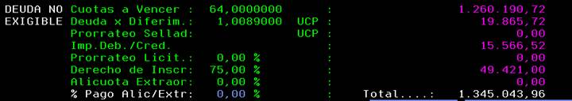
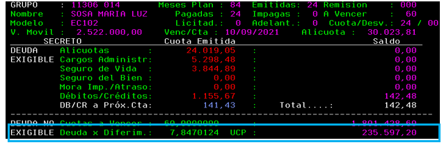

- Cuotas a vencer: son las cuotas a vencer informadas en el estado de cuenta multiplicadas por el valor de la alícuota.
- Deuda por diferimiento: incluye todos los diferimientos que se le fueron realizando a los clientes producto de medidas cautelares, Ponete al día o Resol 14 IGJ.
o Cautelar: mes a mes y determinado por el Sr. Juez que dictaminó la Cautelar respectiva se le realizan o realizaron (para las que se encuentran dadas de baja) créditos que se valorizan en UCP (unidad cuota parte) al VM vigente y se suman dentro de esta línea como EL ULTIMO CONCEPTO A RECUPERAR: SI EL CLIENTE ADELANTA CUOTAS, PRIMERO CANCELARÁ LOS DIFERIMIENTOS PENDIENTES.
Si el cliente sale adjudicado y manda la nota de baja, el recupero de las cautelares se realizará en hasta 12 cuotas.
o Ponete al día: se sumaron las UCP impagas al momento en el cual el cliente decidió adherirse a esta acción para regularizar su plan; se recupera en la antepenúltima y ultima del plan por lo que, SI EL CLIENTE ADELANTA CUOTAS, PRIMERO CANCELARÁ LOS DIFERIMIENTOS PENDIENTES.
Tomar en cuenta que si el cliente se adhirió siendo ahorrista deberá recuperarlo al momento del ingreso del pedido.
o Resol 14 IGJ: mes a mes se sumaron los diferimientos que le fueran otorgados como UCP que se valorizan al VM vigente. El recupero de este concepto es como cuotas adicionales al plan.
Los clientes rescindidos que rehabilitaron utilizando esta herramienta deberán abonar el saldo correspondiente a la rehabilitación (traducido en UCP, valorizado al VM vigente) al momento de salir adjudicado para permitir el ingreso del pedido. Para confirmar si se trata de un caso de este tipo dentro de la consulta de adherentes, F4
Si el cliente quiere cancelar este importe, corresponde cargar un reclamo ADI016 solicitando el importe en el mismo.
|  |
- Prorrateo de sellado: es el importe que queda pendiente de pago y que el cliente debe abonar en caso de cancelar anticipadamente
- Impuesto a los Débitos/Créditos: es el impuesto calculado sobre los conceptos de alícuota + diferimientos + AX (de corresponder) sobre la deuda exigible
- Prorrateo de licitación: en caso de haber optado por esta herramienta al momento de licitar constará como un saldo a favor que se descontará del pago de las cuotas mensuales como un % fijo y se resta del saldo para cancelar o Deuda Total
- Derecho de Inscripción o Admisión: importe pendiente de pago que deberá ser cancelado en caso de abonar total o parcialmente (dependiendo de la cantidad de cuotas que adelante y tomando en cuenta el esquema de recupero, cuotas 2 a 61)
- Alícuota extraordinaria: es el % no financiado en las cuotas del plan que debe ser cancelado al momento de salir adjudicado o bien puede abonarlo total o parcialmente previamente a salir adjudicado. Este concepto no incluye el recupero del impuesto a los deb/cred por lo que debe sumarse a este: AX * 0.01005 + IVA